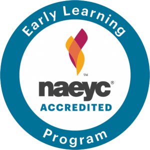

An Accredited Center
At Happy Hands we believe that every child is capable of excellence. That is why we are committed to pursuing and maintaining our status as an accredited daycare center. By seeking national accreditation, you know that Happy Hands is striving to give your family the very best daycare experience.
What is Accreditation?
Every daycare center must meet the state's minimum license requirements. We go beyond that. When a daycare center is awarded national accreditation they are meeting a higher standard that demonstrates its expertise in:
- Classroom Management
- Curriculum Development
- Health and Safety
- Parental Support
- Community Involvement
- Teacher Certification
- Administrative Oversight
Our commitment to accreditation gives you assurance we provide a positive educational experience for your child.
How does Accreditation Work?
Every other year we go through an intense review by recognized and esteemed national accreditation agencies. Their positive reports (available for inspection) confirm that we are providing a clean, safe, and positive environment for our children. Accreditation verifies that our teachers are qualified and fully engaged in giving our children a first-class educational experience.
Once we've completed the entire accreditation self-study process, trained professionals from our accrediting agencies conduct on-site visits to validate our compliance with national early childhood education standards. But accreditation doesn't just take place every two years. It's an ongoing process of self-evaluation, discussion, and parental reviews.
We encourage parents to help us improve our center and become better stewards for their children. You can part of the accreditation process as we work together to make Happy Hands a great neighborhood center.
Who Provides Accreditation?
There are several national organizations that provide accreditation services. Who a center chooses for oversight is important. Happy Hands pursues national accreditation from three of the most respected national early childhood accreditation agencies:
- National Association for Youth Care
- United Accreditation for Early Care and Education
- National Daycare Accreditation
Feel free to contact us to discuss accreditation and learn more about our standards for care and education.